MailDev lite ガイド
顧客ネットワーク内（エアギャップ）で単独動作する単一プロジェクト版：コンテナ 1 つ、SQLite、ローカルアカウント、事前発行の証明書。提供側でパッケージする人、顧客先で導入する人、日常的に使う人向け。
更新 2026-10-29
1. Lite 版とは
同じ製品を、社内インフラがない現場向けにパッケージしたもの。
多くのプロジェクトは顧客の隔離ネットワーク内で動きます。maildev.example.com にも Active Directory にもアクセスできず、PostgreSQL や OpenBao の承認も得られません。MailDev lite はまさにそうした現場のための MailDev の軽量版です。顧客のアプリケーションはメール（SMTP または SendGrid / SES / Azure / Graph / Gmail 形式の API）を MailDev lite に送り、メールは捕捉されて内部に保持され、外部へは一切配送されません（リレーを有効化し owner が 1 通ずつ承認した場合を除く）。
コンテナ 1 つ
Web UI を内蔵した Go バイナリが自ら HTTPS を提供。Node.js も外部データベースも不要。
SQLite
すべての状態は data/ フォルダに。バックアップ = フォルダのコピー。
ローカルアカウント
AD なし。管理者がアカウントを作成し、初回ログイン時にパスワード変更を強制。
単一プロジェクト
プロジェクト default。全アカウントが自動的に member、admin は owner。
10 年証明書
パッケージング時に OpenBao PKI から発行。無い場合は自己署名。
フル版と同じ
SMTP/IMAP/POP3、各プロバイダ API、Outlook、承認付きリレー、S/MIME、監査ログ、保持期間、vi/en/ja UI。
| フル版 (maildev.example.com) | Lite 版 | |
|---|---|---|
| デプロイ | Kubernetes、イメージ 2 つ | コンテナ 1 つ、docker compose |
| データベース | 外部 PostgreSQL | data/ 内の SQLite |
| ログイン | Active Directory + 外部アカウント | ローカルアカウントのみ |
| プロジェクト | 複数、admin が作成 | default の 1 つ |
| ロール | admin / auditor / user; owner / member | 同一。ローカルアカウントも owner、admin、auditor になれる |
| 保存時暗号化 | プロジェクト毎の OpenBao Transit | なし（ディスク暗号化を推奨） |
| TLS 証明書 | cert-manager (Let's Encrypt) | OpenBao PKI の 10 年証明書、または自己署名 |
| プロトコルと機能 | SMTP 25/587/465、IMAP 143/993、POP3 110/995、HTTPS 443、API、リレー、S/MIME、監査 | 同一 |
2. アーキテクチャとポート
ブラウザ ──443──► 8443 HTTPS (Web UI + REST API) ┐
Outlook ──143/993─► 1143/1993 IMAP / IMAPS │ maildev-lite コンテナ
Outlook ──110/995─► 1110/1995 POP3 / POP3S │ （非特権ユーザー）
アプリ ──25/587/465► 1025/1587/1465 SMTP / STARTTLS / SMTPS ┘
/data/maildev.db /data/master.key (ボリューム ./data)
/certs/tls.crt tls.key smime-ca.pem (ボリューム ./certs、読み取り専用)- コンテナは非特権ユーザーで動作し 1024 以上のポートで待ち受け、
docker-compose.ymlがホストの標準ポートを割り当てます。UI は利用者に標準ポートを表示します。 data/には SQLite データベースとマスターキーmaster.key（プロジェクト認証情報とリレーパスワードを暗号化）が入ります。このフォルダのバックアップで十分です。- 外部への通信も自動更新もなし。隔離ネットワーク向け。
| サービス | ホストポート | コンテナポート | 備考 |
|---|---|---|---|
| Web UI、REST API、SendGrid/SES/Azure/Graph/Gmail API | 443 | 8443 | HTTPS。リバースプロキシ／ヘルスチェック用に 8080 の平文 HTTP も開放。 |
| SMTP | 25, 587, 465 | 1025, 1587, 1465 | プロジェクト認証情報での AUTH PLAIN/LOGIN が必須。 |
| IMAP | 143, 993 | 1143, 1993 | INBOX 1 つ。 |
| POP3 | 110, 995 | 1110, 1995 | クライアントで削除するとプロジェクトからも削除。 |
3. 顧客先の要件
- Linux x86-64 サーバー（Ubuntu 22.04+、RHEL 8+ など）、2 CPU、2 GB RAM、20 GB ディスク。
- Docker Engine 24+ と
docker composeプラグイン（または Podman 4+ と podman-compose）。 - サーバーを指す内部ホスト名、例
maildev.customer.local（内部 DNS または hosts）。証明書と一致させること。 - LAN 内で開放: 443、25/587/465、143/993、110/995。インターネット公開は不要。
retention_days（既定 14 日、最大 180）経過後および max_emails（既定 5000）超過分が自動削除されるため、ディスク使用量の増加は緩やかです。4. パッケージング（提供側）
インターネットと OpenBao PKI（pki-int、ロール tls-any）にアクセスできるマシンで行います。
git clone https://github.com/phongbui83/maildev.git cd maildev-lite make sync # （任意）../backend と ../frontend の最新コードを取り込む export BAO_ADDR=https://vault.example.com BAO_TOKEN=<token> make package HOST=maildev.customer.local IP=10.20.30.40 # -> dist/maildev-lite-<version>-maildev.customer.local.tar.gz
バンドルにはイメージ（docker save）、docker-compose.yml、ホスト名入りの .env、certs/（10 年証明書 + CA チェーン、利用者端末用 ca.crt、S/MIME 検証用 smime-ca.pem）、install.sh、ドキュメントが含まれます。
- イメージのみ:
make image。証明書のみcerts/へ:make cert HOST=... IP=...。 - 証明書なしでローカル試用:
make web build && ./dist/maildev-liteの後 https://localhost:8443（自己署名、admin/admin）。 - 自動テスト:
make testはフル版のテスト一式と lite 固有チェックを lite バイナリに対して実行します。
5. 顧客先での導入
- バンドルをサーバーへコピー（USB、SCP など）して展開:
tar xzf maildev-lite-<version>-<host>.tar.gz。 .envを確認（ホスト名、必要なら初期 admin アカウント）。./install.shを実行（=docker load+docker compose up -d）。- 確認:
docker compose ps、docker compose logs -f maildev（https listening、smtp listening の行）、curl -k https://<host>/readyz→ready。 - 利用者端末の信頼ストアに
certs/ca.crtを導入（Windows: 信頼されたルート証明機関）し、ブラウザと Outlook の警告を防ぐ。
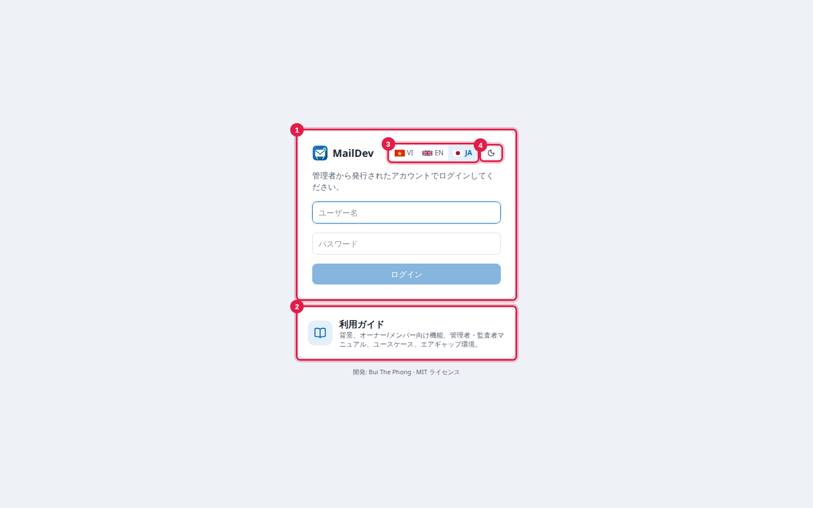
初回は admin / admin（または .env の MAILDEV_LITE_ADMIN_USER/PASSWORD）でログインします。直ちにパスワード変更が強制されます: 12 文字以上、大文字・小文字・数字を含むこと。以後 admin が作成するアカウントも初回ログイン時に変更が必要です。
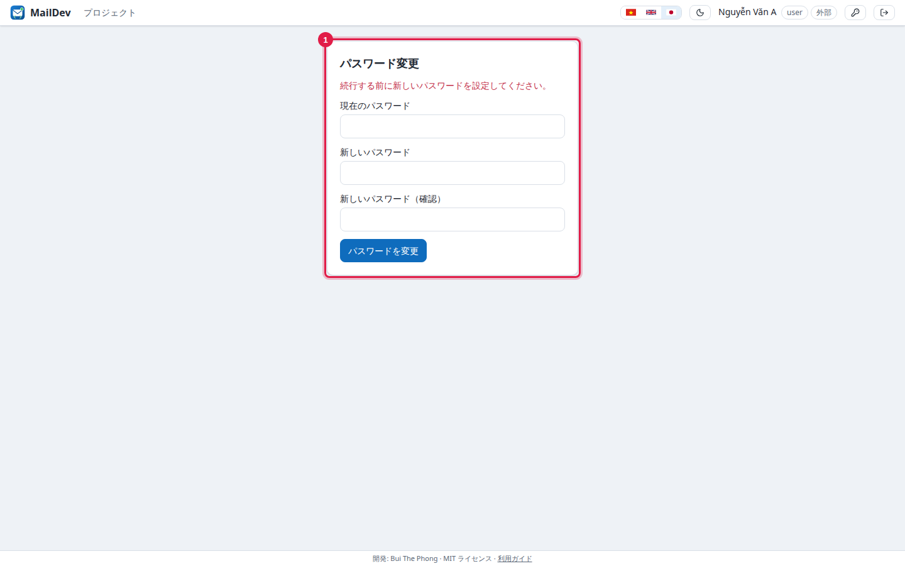
6. .env 設定
| 変数 | 既定 | 意味 |
|---|---|---|
MAILDEV_HOSTNAME | maildev.local | 利用者が接続するホスト名。開発情報に表示、自己署名証明書に使用。 |
MAILDEV_PUBLIC_URL | https://<hostname> | API 例で使う Web URL。 |
MAILDEV_LITE_ADMIN_USER / _PASSWORD | admin / admin | 初期 admin。admin が 1 人もいない場合のみ作成。 |
MAILDEV_LITE_PROJECT_NAME | Default | 唯一のプロジェクトの表示名（スラッグは default 固定）。 |
MAILDEV_MAX_MESSAGE_BYTES | 26214400 | メールサイズ上限（25 MB）。 |
MAILDEV_SESSION_TTL | 12h | Web セッションの有効期間。 |
MAILDEV_HTTP_ADDR | :8080 | リバースプロキシ／ヘルスチェック用平文 HTTP。空で無効。 |
MAILDEV_HTTPS_ADDR | :8443 | HTTPS。TLS リバースプロキシがある場合は空に。 |
MAILDEV_COOKIE_SECURE | true | 平文 HTTP でアクセスする場合のみ false。 |
MAILDEV_MASTER_KEY | data/master.key に自動生成 | 認証情報とリレーパスワードを暗号化するマスターキー（base64、32 バイト）。 |
MAILDEV_SMIME_CA_FILE | 存在すれば /certs/smime-ca.pem | S/MIME 署名検証の信頼アンカー。 |
フル版の MAILDEV_* 変数はすべて使えます。例: 顧客に AD がある場合は MAILDEV_AUTH_MODE=ldap と MAILDEV_LDAP_*。
7. 日常の利用
ホーム
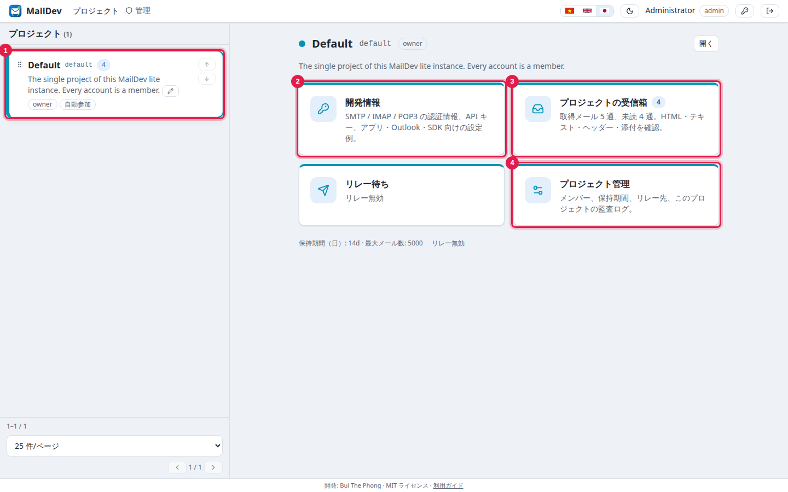
開発情報: アプリケーションの接続
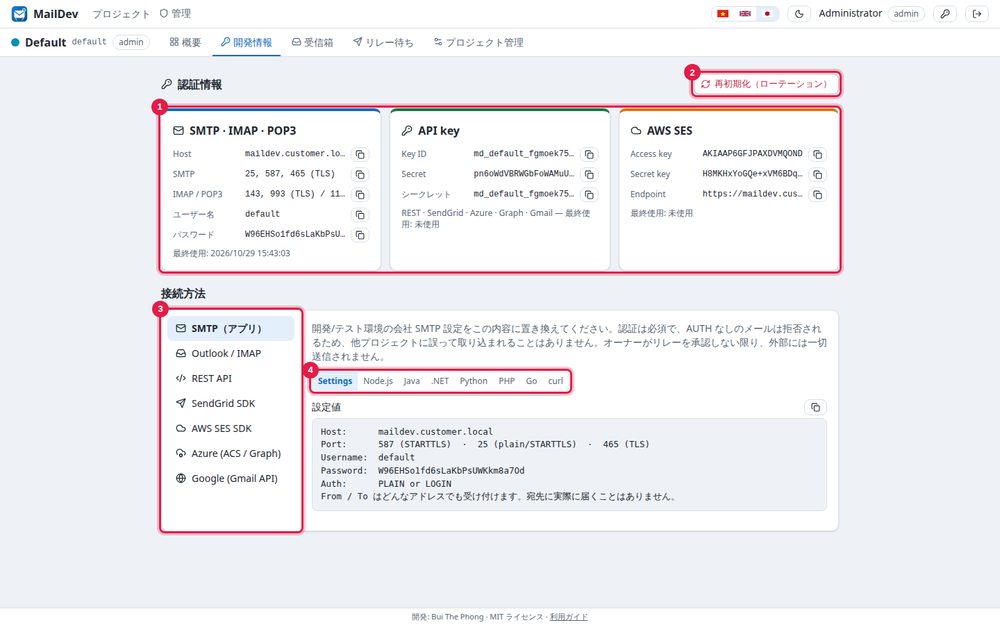
default）、API キー、AWS SES 形式キー · 2 認証情報の再初期化 · 3 プロバイダ選択 · 4 サンプルコードの言語アプリはホストと認証情報を変えるだけで SDK はそのまま: SMTP（nodemailer、Spring、Laravel、Django、.NET、Go、Java）、SendGrid（https://<host>/sendgrid）、AWS SES v1/v2（https://<host>/ses）、Azure Communication Services（endpoint=https://<host>/azure/<key id>;accesskey=…）、Microsoft Graph（https://<host>/graph/<key id>/v1.0）、Gmail API（https://<host>/gmail/<key id>）、汎用 REST POST /api/v1/send。
Host: maildev.customer.local Port: 587 (STARTTLS) または 25 / 465 Username: default Password: <プロジェクトの SMTP パスワード>
Outlook / Thunderbird
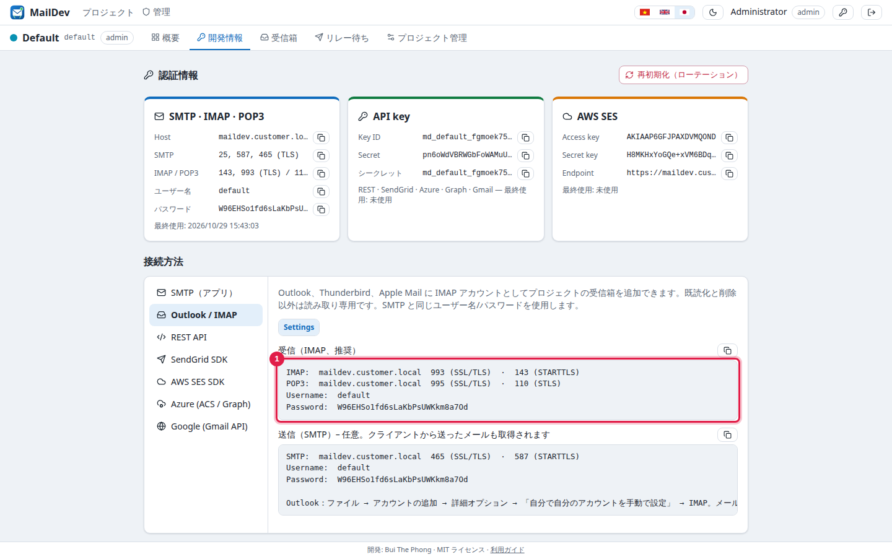
- Outlook: ファイル → アカウントの追加 → 詳細オプション → 「自分で自分のアカウントを手動で設定」 → IMAP。
- メールアドレス: 任意のラベル、例
default@maildev.customer.local。 - 受信: <host>、993、SSL/TLS。送信: <host>、465 SSL/TLS（または 587 STARTTLS）。
- ユーザー名／パスワード: プロジェクトの SMTP 認証情報。証明書警告を避けるには
ca.crtの導入が必要。
受信箱
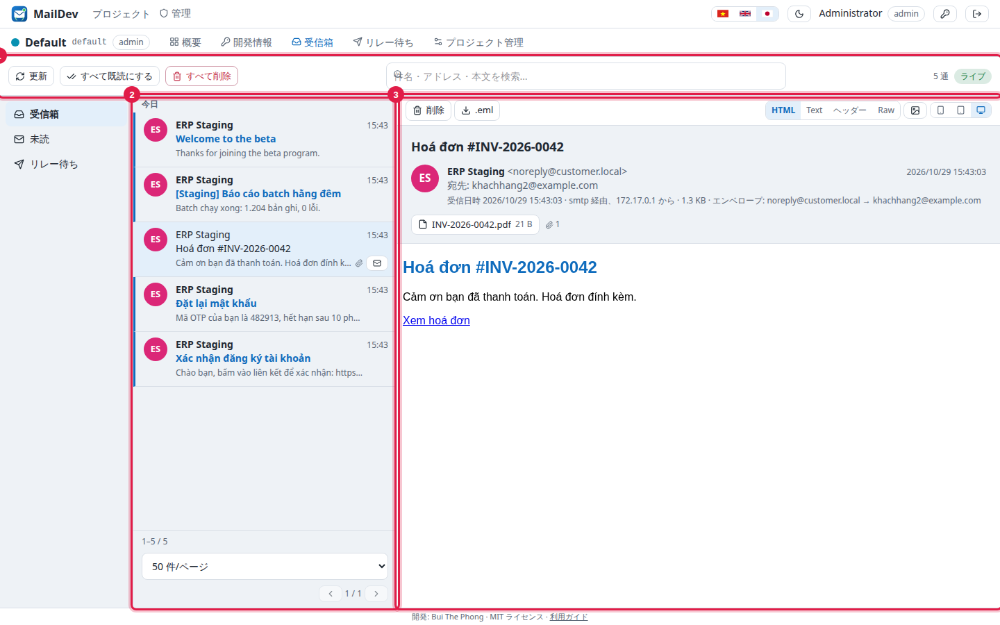
- 件名、アドレス、本文で検索。↑/↓ キーでメール移動。
- リモート画像は既定でブロック。画像アイコンで必要時に読み込み。
- 新着は即時表示（「ライブ」バッジ）。S/MIME 署名メールは
smime-ca.pemによる検証結果を表示。 - member は閲覧・検索・削除・既読化、owner はさらにプロジェクト管理。
8. 管理
アカウント
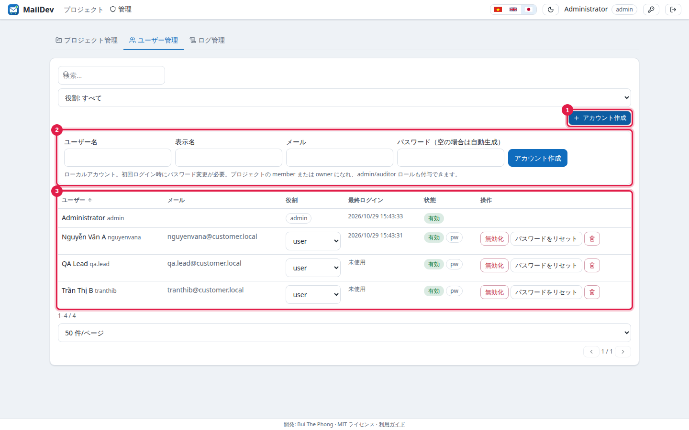
| グローバルロール | 権限 |
|---|---|
| admin | すべて: アカウント作成、ロール設定、プロジェクト設定、リレー先、全監査ログ。プロジェクトの owner に自動でなる。 |
| auditor | 読み取り専用: 受信箱、メンバー、全体ログ。変更不可。 |
| user | 既定。プロジェクトの member に自動参加。owner が owner に昇格可能。 |
- 新規アカウントは初回ログイン時にパスワード変更必須（一覧の
pwバッジ）。 - パスワードリセットは 1 回だけ表示される一時パスワードを生成。無効化は全セッションを終了。ロック解除は誤入力ロック後に。
- admin パスワード紛失時: サーバーで
docker compose run --rm maildev reset-admin adminを実行すると一時パスワードが表示されます。
メンバーと owner
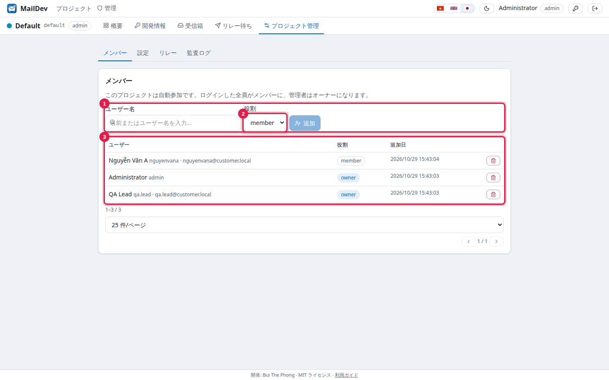
owner（PM、QA リード）はメンバー管理、認証情報の再初期化、説明の編集、リレー承認、プロジェクトログの閲覧を行います。owner は複数設定可能。
プロジェクト設定
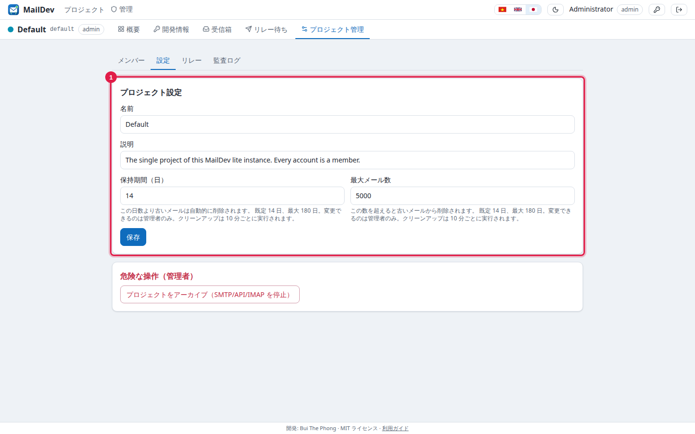
retention_cleanup を記録。リレー（任意、既定は無効）
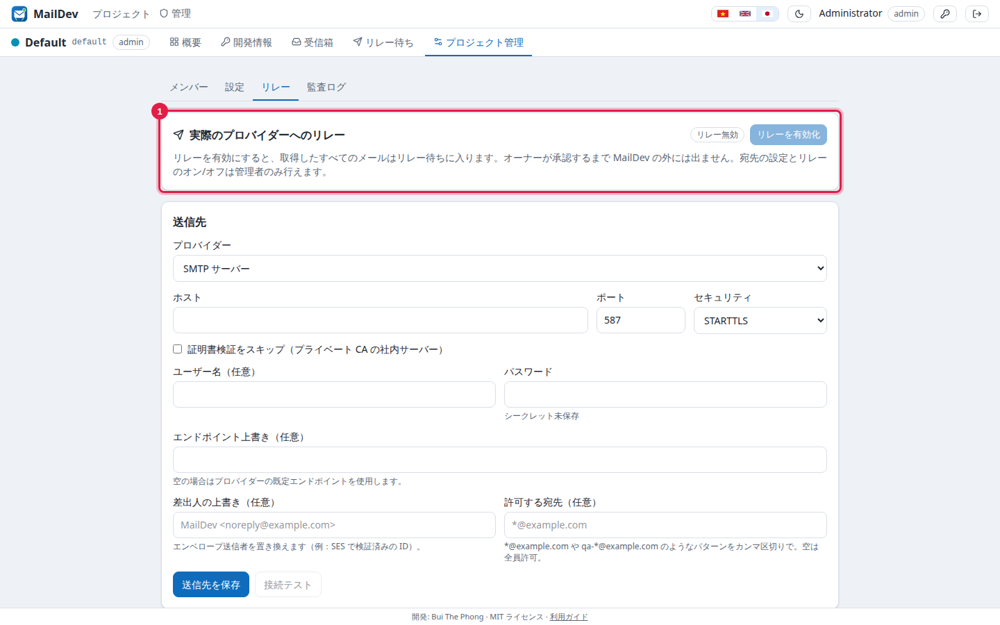
- admin: プロジェクト管理 → リレー → 送信先を選択、保存、接続テスト、リレー有効化。
- owner: リレーキュー → 1 通または複数選択 → 承認（実送信）または却下、メモ付き。
- 許可リスト外の宛先はブロック。すべての判断が記録されます（
relay_approve、relay_sent、relay_rejectなど）。
プロジェクトとログ
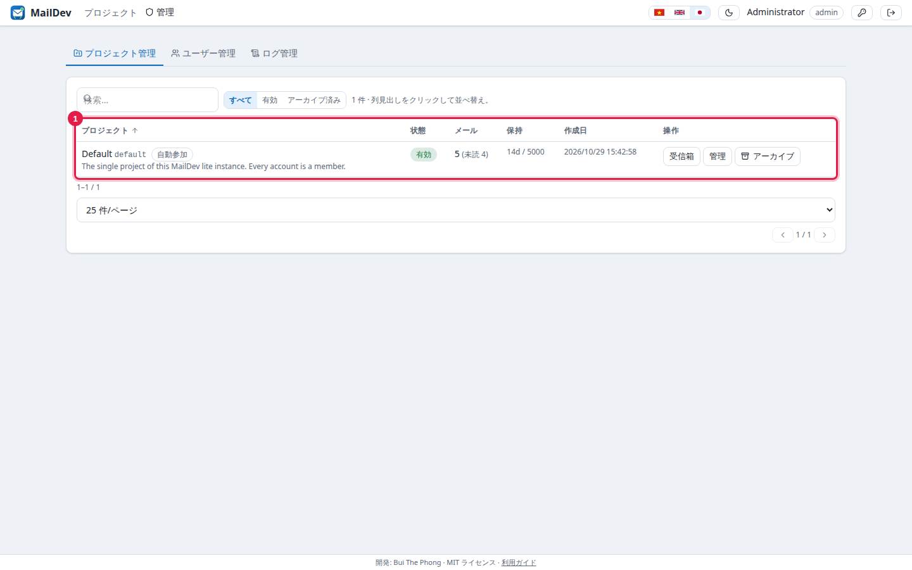
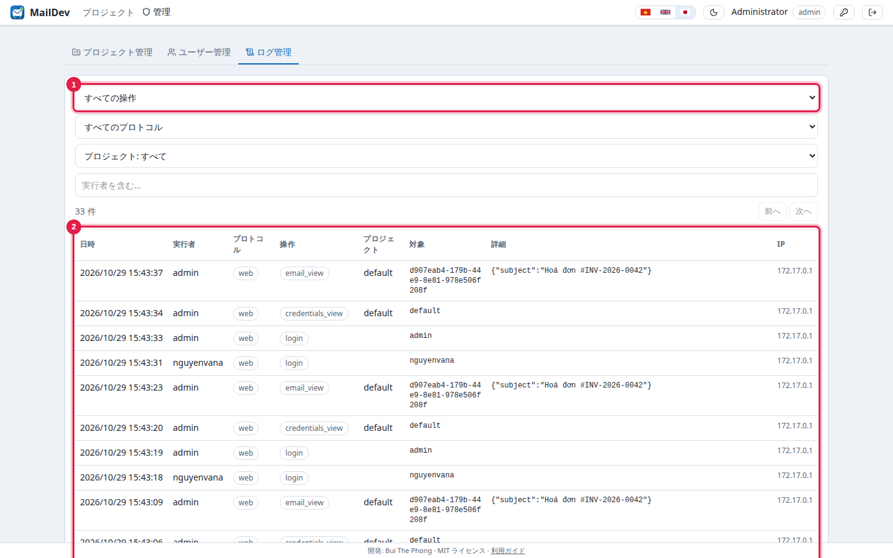
9. バックアップ・復元・アップグレード
# バックアップ（整合性のため停止） docker compose stop tar czf maildev-backup-$(date +%F).tgz data certs .env docker compose start # 新ホストでの復元: バンドル展開後 data/ と certs/ を上書きコピーし ./install.sh # アップグレード: 提供側から新バンドルを受領 docker load < maildev-lite-image-<new>.tar.gz sed -i 's/^MAILDEV_IMAGE=.*/MAILDEV_IMAGE=docker.example.com\/maildev\/lite:<new>/' .env docker compose up -d # SQLite スキーマは起動時に自動更新
data/master.key は data/maildev.db と常に一緒に保管してください。キーを失うと保存済み認証情報が読めなくなり、プロジェクト認証情報の再初期化とアプリ側の更新が必要です。- 証明書の有効期間は 10 年。更新は 提供側で新規発行（
make cert）しcerts/を差し替えてdocker compose restart。 - 同じ
data/で 2 つのコンテナを動かさないこと。 - メールは SQLite 内に平文で保存されるため、サーバーディスクの暗号化を推奨。
10. トラブルシューティング
| 症状 | 対処 |
|---|---|
bind: address already in use | 25/143/443 などを他サービス（Postfix、Dovecot、nginx）が使用中。停止するか docker-compose.yml と MAILDEV_PUBLIC_*_PORTS のポート割当を変更。 |
| ブラウザ／Outlook が証明書を警告 | certs/ca.crt を導入。アクセスするホスト名が証明書と一致するか確認: openssl x509 -in certs/tls.crt -noout -subject -ext subjectAltName。 |
| admin パスワード紛失／ロックアウト | docker compose run --rm maildev reset-admin admin → 一時パスワード、ログイン時に変更強制。 |
| ログイン後にログイン画面へ戻る | MAILDEV_COOKIE_SECURE=true のまま平文 HTTP でアクセスしている。HTTPS を使うか、HTTP リバースプロキシ配下では false に。 |
アプリが 530 Authentication required | SMTP はプロジェクトのユーザー名／パスワード（開発情報）で認証が必須。宛先アドレスは無関係。 |
535 Authentication credentials invalid | 認証情報が再初期化されたかプロジェクトがアーカイブ済み。開発情報で再取得。 |
| Outlook にメールが表示されない | Outlook は IMAP/POP3 で設定（Exchange ではない）。ポート 993/995 とプロジェクトの SMTP 認証情報を確認。 |
ログに database is locked | ディスクが遅い／満杯、または他プロセスが maildev.db を開いている。 |
アプリケーションログ: docker compose logs --tail=200 maildev（JSON、捕捉メール 1 通につき mail captured 1 行）。連絡先、buithephong@gmail.com。